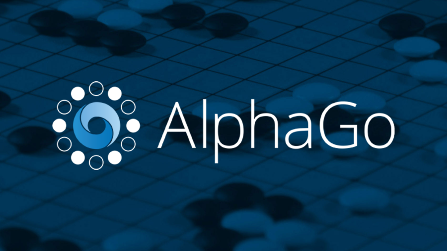

TIPOS DE INTELIGENCIA ARTIFICIAL
AlphaGo

AlphaGo es una inteligencia artificial desarrollada por Google DeepMind que se especializa en jugar al juego de mesa Go. En 2016, AlphaGo derrotó al campeón mundial de Go, Lee Sedol, en una serie de partidas, demostrando su capacidad para superar a los humanos en un juego complejo.
- Aprendizaje automático: AlphaGo utiliza algoritmos de aprendizaje automático para mejorar sus habilidades en el juego.
- Análisis de patrones: AlphaGo analiza patrones en el juego para tomar decisiones estratégicas.
- Toma de decisiones estratégicas: AlphaGo puede tomar decisiones rápidas y precisas en entornos dinámicos.
Aplicaciones
- Juegos de estrategia
- Análisis de datos complejos
- Toma de decisiones en entornos dinámicos
Watson

Watson es una inteligencia artificial desarrollada por IBM que se enfoca en el procesamiento de lenguaje natural y el análisis de grandes cantidades de datos. En 2011, Watson ganó el concurso de televisión Jeopardy!, demostrando su capacidad para procesar y analizar grandes cantidades de información.
- Procesamiento de lenguaje natural: Watson puede entender y procesar lenguaje natural.
- Análisis de grandes cantidades de datos: Watson puede analizar grandes cantidades de datos para encontrar patrones y relaciones.
- Respuestas precisas y rápidas: Watson puede proporcionar respuestas precisas y rápidas a preguntas complejas.
Aplicaciones
- Asistencia virtual
- Análisis de datos empresariales
- Chatbots
Siri
Siri es una inteligencia artificial desarrollada por Apple que se enfoca en la interacción con los usuarios a través del lenguaje natural. Siri puede realizar tareas como enviar mensajes, hacer llamadas y proporcionar información.
- Procesamiento de lenguaje natural: Siri puede entender y procesar lenguaje natural.
- Integración con dispositivos: Siri se integra con dispositivos Apple para proporcionar una experiencia de usuario más completa.
- Personalización: Siri puede personalizar la experiencia del usuario según sus preferencias y hábitos.
Aplicaciones
- Asistentes virtuales
- Control de dispositivos
- Interacción con usuarios
Alexa
Alexa es una inteligencia artificial desarrollada por Amazon que se enfoca en la interacción con los usuarios a través del lenguaje natural. Alexa puede realizar tareas como controlar dispositivos, proporcionar información y realizar compras.
- Procesamiento de lenguaje natural: Alexa puede entender y procesar lenguaje natural.
- Integración con dispositivos: Alexa se integra con dispositivos Amazon para proporcionar una experiencia de usuario más completa.
- Personalización: Alexa puede personalizar la experiencia del usuario según sus preferencias y hábitos.
Aplicaciones
- Asistentes virtuales
- Control de dispositivos
- Interacción con usuarios
TensorFlow

TensorFlow es una inteligencia artificial desarrollada por Google que se enfoca en el aprendizaje automático y el procesamiento de datos. TensorFlow es una herramienta popular para desarrollar modelos de aprendizaje automático.
- Aprendizaje automático: TensorFlow utiliza algoritmos de aprendizaje automático para mejorar sus habilidades en el procesamiento de datos.
- Procesamiento de datos: TensorFlow puede procesar grandes cantidades de datos para encontrar patrones y relaciones.
- Desarrollo de modelos: TensorFlow es una herramienta popular para desarrollar modelos de aprendizaje automático.
Aplicaciones
- Análisis de datos
- Desarrollo de modelos de aprendizaje automático
- Procesamiento de lenguaje natural
Mejora del Uso de la Inteligencia Artificial
Para mejorar el uso de la inteligencia artificial, es importante:
- Entrenar a los modelos: Entrenar a los modelos de inteligencia artificial con datos de alta calidad para mejorar su precisión y eficacia.
- Garantizar la privacidad: Garantizar la privacidad y seguridad de los datos utilizados por la inteligencia artificial.
- Fomentar la transparencia: Fomentar la transparencia en la toma de decisiones de la inteligencia artificial para evitar sesgos y errores.